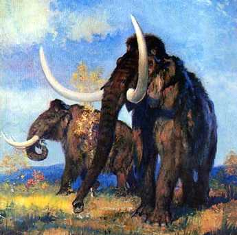
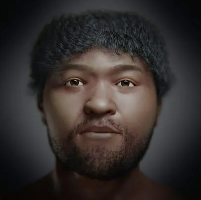
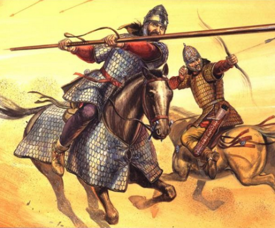
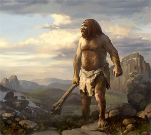

A escultura de ossos de Mamute
O Achado
Arqueólogos recentemente fizeram uma descoberta extraordinária na cidade de Voronezh, na Rússia, onde uma escultura colossal feita de ossos de mamute foi desenterrada.
Com uma extensão impressionante de 12,5 metros, a escultura é datada de aproximadamente 25 mil anos atrás, remontando à era do gelo.
Estrutura achada em Voronezh

Os pesquisadores estão agora empenhados em decifrar os motivos que levaram os habitantes da era do gelo a criar essa estrutura monumental. Embora não seja a primeira escultura desse tipo descoberta no Leste Europeu, é a mais antiga até o momento.
Para erguer a escultura, foram utilizados centenas de ossos provenientes de aproximadamente 60 mamutes diferentes.
Alexander Pryor, pesquisador da Universidade de Exeter, expressou admiração pelo esforço necessário para reunir tal quantidade de ossos: "Pegar tantos ossos, de pelo menos 60 mamutes diferentes, é um desafio e tanto. Eles precisariam ser retirados de caças recentes, ou de carcaças mortas há tempos. De qualquer forma, ossos de mamute são muito pesados, especialmente os frescos. Carregá-los deve ter exigido um esforço enorme."
Pelo fato de os Mamute Lanoso (Mammuthus primigenius) principal especíe que vivia nas regiões mais frias, como a Europa, Ásia e América do Norte podia ter um peso médio em torno de 6.800 kg, mas alguns indivíduos podiam chegar a 12.000 kg ou mais em vida.
PaleoArt de um Mamute




Os cientistas, ao serem questionados sobre o propósito da escultura, especulam que o local pode ter sido usado para rituais, embora a natureza exata desses rituais ainda seja desconhecida.
Os cientistas, já haviam conhecimento sobre o uso de ossos de mamutes para outras situações, desde a criação de vestimenta com a sua pele, a criação de cabanas, porém a criação de uma escultura desse tamanho foi uma novidade.
Cabana Humana preservada
Uma das hipóteses levantadas sugere que os buracos ao redor da estrutura poderiam ter sido utilizados para queimar alimentos ou ossos, ou mesmo para depositar resíduos e materiais excedentes de construções. O enigma em torno dessa descoberta continua a intrigar a comunidade científica, enquanto eles buscam desvendar os mistérios dos antigos habitantes de Voronezh.
Ler Mais
O Rosto do Passado
Brasileiros fazem reconstrução facial de egípcio que viveu há 35 mil anos.
Ler MaisOs ossos de 2 mil anos atrás
Os mistérioso ossos de um jovem que nasceu no sul da Rússia e foram encontrados na Inglaterra.
Ler MaisO Elo Genético
Pesquisadores analisaram dna de até 40 mil anos para retraçar o elo entre as duas espécies
Ler Mais